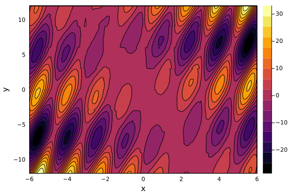

QuanticsTCI.jl user guide
This module allows easy translation of functions to quantics representation. It meshes well with the TensorCrossInterpolation.jl module, together with which it provides quantics TCI functionality.
Quickstart
The easiest way to construct a quantics tensor train is the quanticscrossinterpolate function. For example, the function $f(x, y) = (cos(x) - cos(x - 2y)) * abs(x + y)$ can be interpolated as follows.
using QuanticsTCI
f(x, y) = (cos(x) - cos(x - 2y)) * abs(x + y)
xvals = range(-6, 6; length=256)
yvals = range(-12, 12; length=256)
qtt, ranks, errors = quanticscrossinterpolate(Float64, f, [xvals, yvals]; tolerance=1e-8)(QuanticsTCI.QuanticsTensorCI2{Float64}(TensorCrossInterpolation.TensorCI2{Float64} with rank 24, QuanticsGrids.DiscretizedGrid{2}(8, (-6.0, -12.0), (6.0, 12.0), 2, :interleaved, true), TensorCrossInterpolation.CachedFunction{Float64, BitIntegers.UInt256} with 8809 entries), [18, 24, 24, 24], [2.7973925437807258e-15, 3.249693702684143e-15, 3.548023493976166e-15, 3.548023493976166e-15])The output object qtt now represents a quantics tensor train. It can then be evaluated a function of indices enumerating the xvals and yvals arrays.
using Plots
qttvals = qtt.(1:256, collect(1:256)')
contour(xvals, yvals, qttvals, fill=true)
xlabel!("x")
ylabel!("y")GKS: cannot open display - headless operation mode activeThe convergence criterion can be controlled using the keywords tolerance, pivottolerance, and maxbonddim.
toleranceis the value of the error estimate at which the optimization algorithm will stop.pivottoleranceis the threshold at which each local optimization will truncate the bond.maxbonddimsets the maximum bond dimension along the links.
A common default setting is to control convergence using tolerance, and to set pivottolerance equal or slightly smaller than that. Specifying maxbonddim can be useful as a safety. However, if maxbonddim is set, one should check the error estimate for convergence afterwards.
In the following example, we specify all 3 parameters, but set maxbonddim too small.
qtt, ranks, errors = quanticscrossinterpolate(
Float64, f, [xvals, yvals];
tolerance=1e-8,
pivottolerance=1e-8,
maxbonddim=8)
print(last(errors))
qttvals = qtt.(1:256, collect(1:256)')
contour(xvals, yvals, qttvals, fill=true)
xlabel!("x")
ylabel!("y")┌ Warning: The option `pivottolerance` of `optimize!(tci::TensorCI2, f)` is deprecated. Please update your code to use `tolerance`, as `pivottolerance` will be removed in the future.
└ @ TensorCrossInterpolation ~/.julia/packages/TensorCrossInterpolation/xQyHg/src/tensorci2.jl:720
0.09220884072661922
The plot shows obvious noise due to the insufficient maximum bond dimension. Accordingly, the error estimate of $0.08$ shows that convergence has not been reached, and an increase of the maximum bond dimension is necessary.
Further reading
- See the API Reference for all variants of calling
quanticscrossinterpolate. - If you are having trouble with convergence / efficiency of the TCI, you might have to tweak some of its options. All keyword arguments are forwarded to
TensorCrossInterpolation.crossinterpolate2()internally. See its documentation for further information. - If you intend to work directly with the quantics representation, QuanticsGrids.jl is useful for conversion between quantics and direct representations. More advanced use cases can be implemented directly using this library.